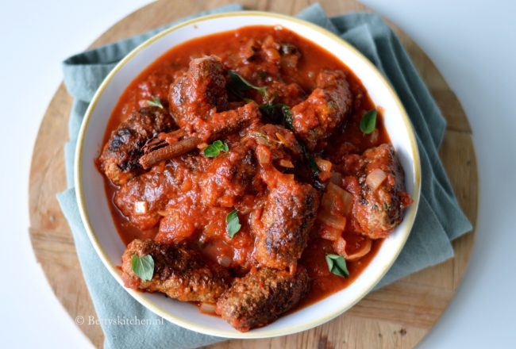

De Griekse keuken houdt veel meer in als enkel een ‘ Mixed Grill’, zoals sommigen denken. Het is een gegeven dat vlees vaak terugkomt in de Griekse keuken, maar dan ook in meer ‘landelijke’ gerechten, zoals deze Keftedes.
Ingrediënten
- 1 700 gram gehakt,s rijst
- 1 2 sjalotjes
- 3 2 teentjes knoflook
- 1 eetlepel oregano
- 1 eetlepel verse peterselie
Bereidingswijze
- Maak als eerste de keftedes: Meng in een kom het gehakt, met de sjalotjes, knoflook, fijngehakte oregano, fijngehakte peterselie, paprikapoeder, broodkruim en het ei. Breng op smaak met zout & peper en kneed goed door. Vorm hier vervolgens 16-20 gehaktballen of gehaktstaven (kleine, dikke, sigaren) van.
- Verhit een scheutje olijfolie in een hapjespan en bak hierin de keftedes rondom aan, op middelhoog vuur. Zorg dat alle kanten goed dichtgeschroeid zijn. Schep de gehaktballen/staven vervolgens uit de pan en zet apart
- Vervolgens ga je de tomatensaus maken. In de gebruikte pan bak je de ui rondom glazig. Voeg het blik tomatenstukjes toe, samen met het kaneelstokje, de blaadjes oregano en munt en 1-2 kopjes water. Breng aan de kook op middelhoog vuur en breng op smaak met peper & zout.
- Leg de keftedes in de tomatensaus en verlaag het vuur naar middelmatige temperatuur. Laat de gehaktballen/staven sudderen in de tomatensaus gedurende 15 minuten.
- Verwijder het kaneelstokje uit de pan en serveer de Griekse gehaktballen in tomatensaus direct. Keftedes zijn heerlijk met gekookte rijst, of gebakken aardappels.